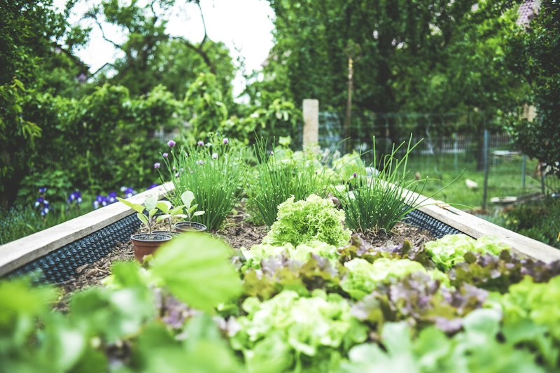
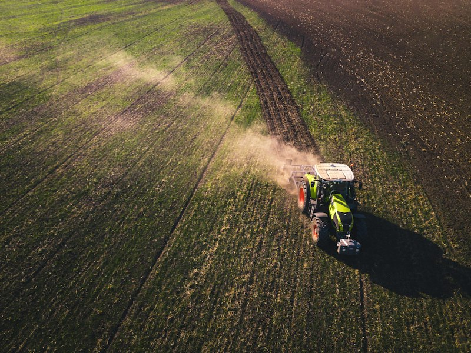
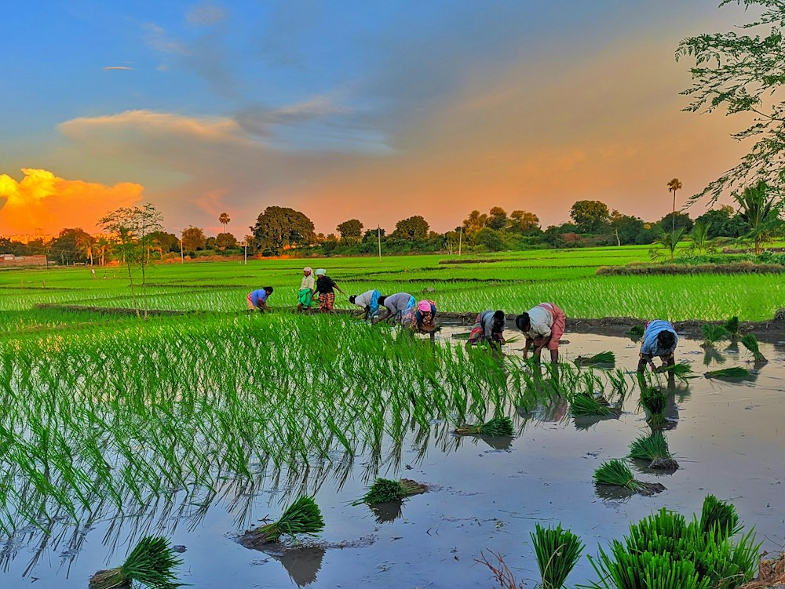
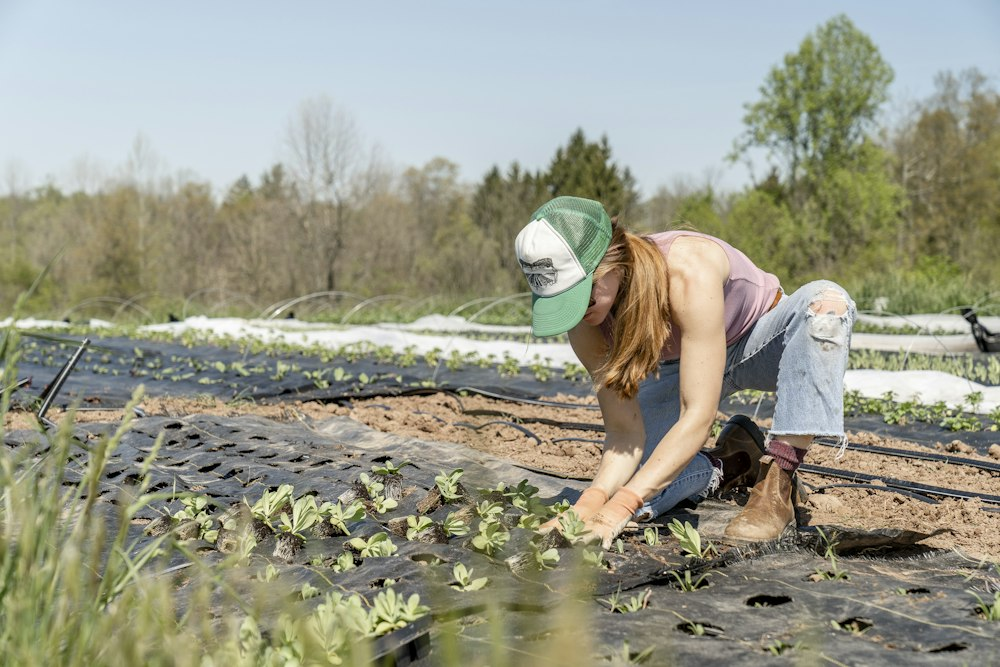

The foundation of profitable farming is healthy, biologically active soil. We supply high-volume organic compost, aged livestock manures, and targeted natural micronutrients to cultivate disease-free, high-brix agricultural harvests.
Select your crop and farm acreage to instantly estimate your seasonal organic manure and vermicompost needs.
No two farms have the same soil texture, water availability, or nutrient extraction rate. We provide tailored organic fertilizer programs engineered specifically for commercial growers, plantation managers, and greenhouse operations.
High-potash organic inputs for banana bunches, coconut basins, and sugarcane ratoon crops designed for heavy canopy retention.
Ultra-fine sifted vermicompost and liquid manure tea extracts tailored for automated drip fertigation without nozzle clogging.
Seasonal ring applications of bone meal and slow-release neem compost to support heavy flowering and fruit set.

From aerobically cured livestock manures to plant-based oil cakes and mineral-rich bone powders, discover our complete biological nutrition line.

180-day matured cow dung, dehydrated poultry manure, and composted goat litter providing abundant organic carbon, humic matter, and beneficial soil microbes.
Thermal Cured 65°C Zero Weed SeedsCastings produced by Australian red worms (*Eisenia fetida*) infused with humic and fulvic acids, gibberellins, and plant growth promoting rhizobacteria.
5x Available Nitrogen 7x Available PhosphateCold-pressed neem cake with azadirachtin, steam-sterilized bone meal for phosphorus, and organic potash for fruit size and sugarcane brix.
Pest Repelling Slow-Release NutritionChemical fertilizers provide brief, synthetic spikes in soluble salts while starving soil microfauna. In contrast, natural composted manures permanently upgrade the physical crumb structure of farmland:
Achieved over 24 months with regular cow dung and vermicompost basal application, creating durable water-holding crumb aggregates.
Explosive proliferation of mycorrhizae and phosphorus-solubilizing bacteria unlocking bound minerals.
Elimination of compacted plow pan layers lets roots tap deeper subsoil moisture during peak summer droughts.
When soil is nurtured with bioactive organic compost and cold-pressed oil cakes, crops develop robust cell walls, dense vascular root networks, and elevated chlorophyll synthesis. The resulting harvests demonstrate measurable resistance to environmental stress and produce superior nutritional density.
Humic acids trigger primary taproot elongation and lateral root branching for deeper nutrient absorption.
Bioactive azadirachtin and beneficial actinomycetes suppress soil-borne pathogens and root nematodes.
Organic carbon spongy matrix retains up to 70% more plant-available water during dry spells.
Balanced natural trace minerals boost sugar levels, firmness, aroma, and commercial shelf life.

TerraPure transforms agricultural by-products and organic livestock waste into biologically active plant nutrients. By closing the nutrient loop, our operations help commercial growers transition from synthetic dependency to sustainable, self-sufficient soil fertility.
Controlled high-temperature windrows reach 65°C, eliminating weed seeds and pathogens without chemical additives.
Zero chemical salt runoff or synthetic nitrates contaminating village drinking water and irrigation aquifers.
Re-inoculates degraded land with millions of indigenous beneficial bacteria and mycorrhizal colonies per gram.

With modern manufacturing yards spanning 75 acres and dedicated quality testing laboratories, TerraPure guarantees consistent nutrient consistency, on-time bulk logistics, and agronomic guidance for large-scale agricultural projects.
We supply plantations, Farmer Producer Organizations (FPOs), organic farms, tea and coffee estates, and municipal horticulture departments. Immediate dispatch across South India and pan-India rail logistics.